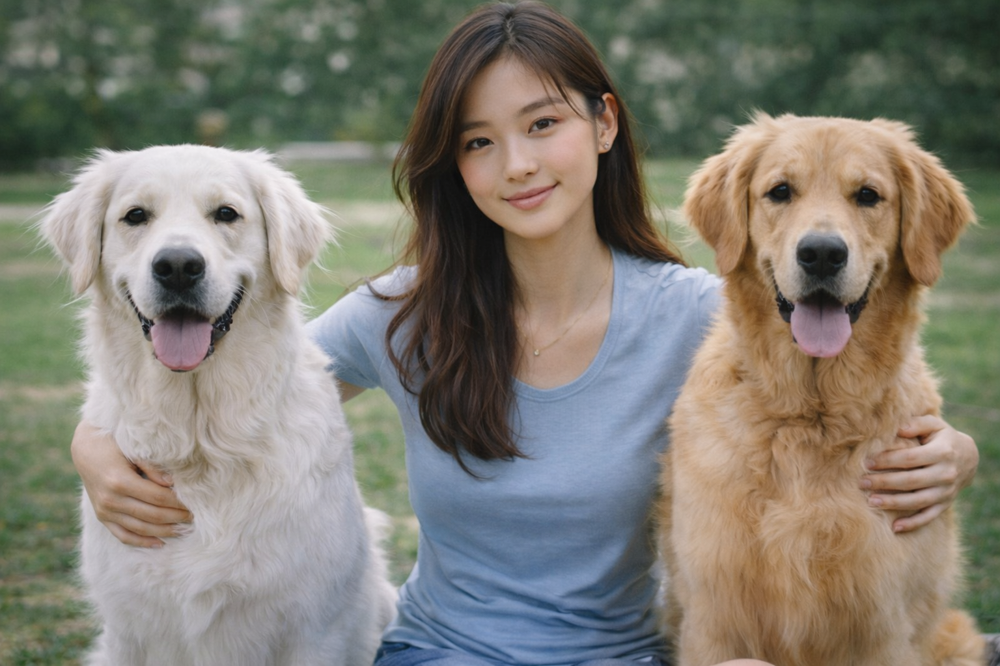

I am Cheryl Tan, a 27-year-old Singaporean, and I come from a family deeply rooted in public service. Both of my parents are retired senior police officers, and growing up in that environment shaped my values in lasting ways. Their example taught me the importance of discipline, integrity, resilience, and service to others — values that continue to guide how I live and work each day.
I graduated from the Imperial College London and now serve as a Medical Officer in Paediatrics in the Singapore General Hospital (SGH). Medicine, to me, is not only about treating illness, but also about caring for people with empathy,patience, and respect. I believe that patients, especially the young ones, deserve to feel heard, reassured, and supported,especially during moments when they may feel vulnerable or uncertain.
Outside of work, I enjoy staying active through Krav Maga and squash. I have been training in Krav Maga with Kravist Singapore since I was five years old, and it has taught me focus, confidence, discipline, and mental strength. Squash gives me a different kind of energy — it keeps me sharp, pushes me physically, and provides a refreshing balance to the demands of my work in medicine. I also volunteer at the Singapore SPCA, where I enjoy spending time supporting animal welfare work.

I also share my life with my two Golden Retrievers, Red and Bubbles. Red is the white one, and Bubbles is light brown. They bring so much warmth, companionship, and joy to my everyday life, and spending time with them is one of the simplest and happiest parts of my routine.